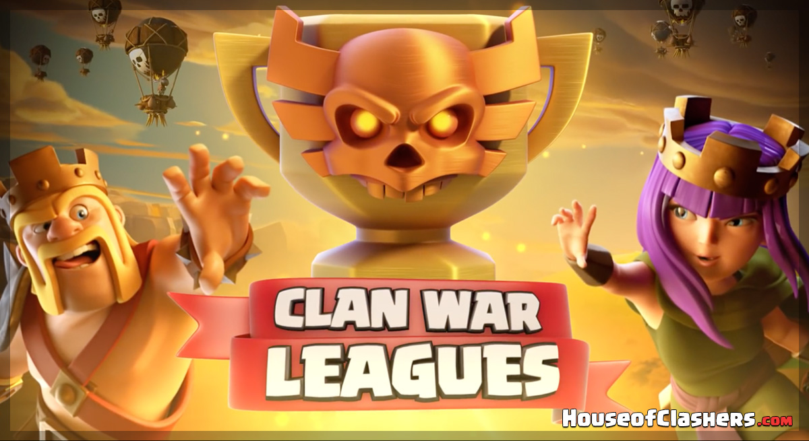
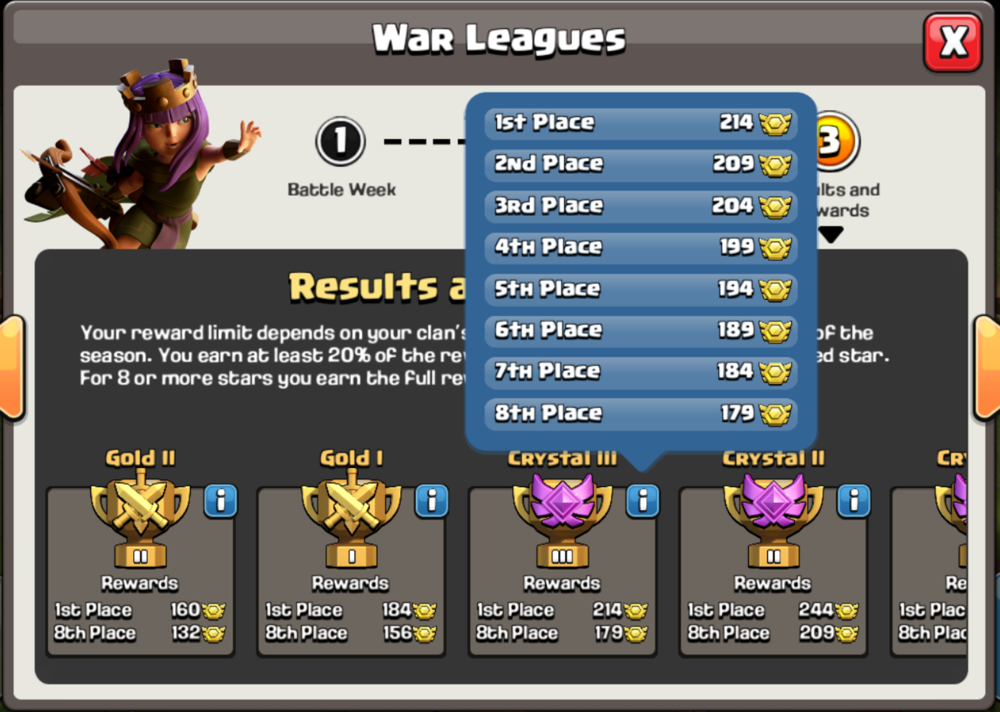
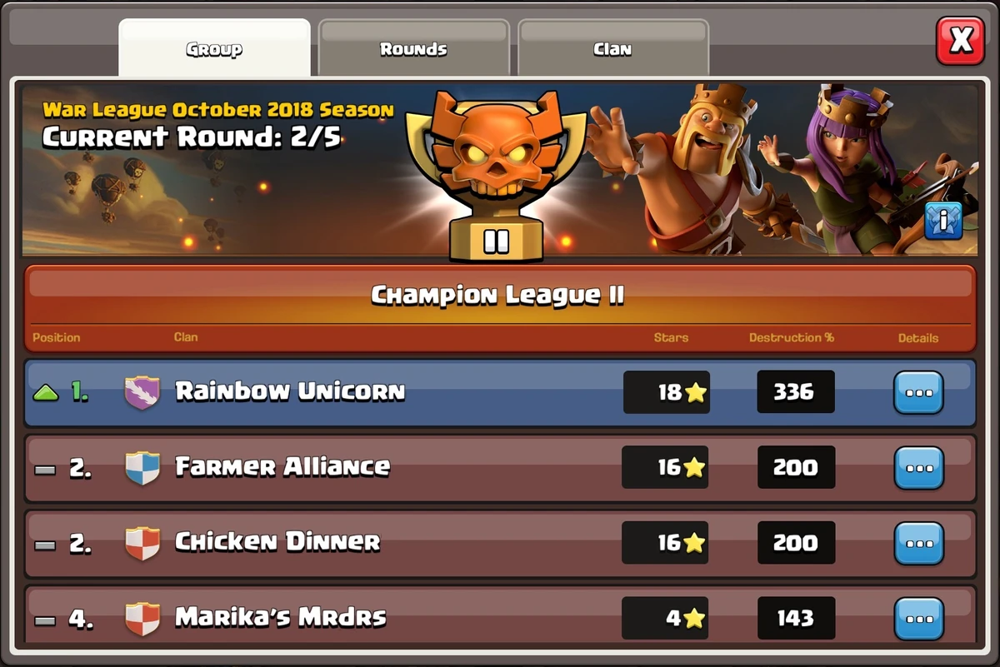

Clan War League
Information

Clash of Clans players are familiar with the concept of Clan Wars. In the October 2018 update, a similar feature was added to the game called Clan War League. Clan War league is a Clan War where multiple clans take part for a chance of promotion.
It is a fun addition to the game where many people can take part and gain amazing rewards. There is only one winner, but clans with the 2nd, 3rd or 4th position can get promoted. When a Clan War League ends, players get league trophies used to determine a Clan’s league.

In Clan War Leagues, groups of 8 clans compete against each other to progress through the leagues. All the members of each clan get rewarded at the end of the war. The highest leagues offer the most significant rewards in Clan War League and vice versa.There is one Clan War League per season which starts roughly around the same time every month.
Once every season, there will be a two-day League sign-up period, where Clans can sign up for the War Leagues. Once a Clan has signed up, they are placed in a Clan War and seven other Clans of the same league.This lasts for eight days, with each clan facing the other once. At the end of the War League period, the best performing Clans are promoted to the successive league, while the worst performing Clans are demoted to the adjacent lower league.

Apart from War attack bonuses, a clan receives clan medals based on their position in the war. Clan co-leaders and leaders can assign bonus League Medals as a reward to the best-performing members of the clan.
From lower to higher:
Bronze III-34------Bronze II-46
Bronze I-58--------Silver III-76
Silver II-94-------Silver I-112
Gold III-136-------Gold II-160
Gold I-184---------Crystal III-214
Crystal II-244-----Crystal I-274
Master III-310-----Master II-346
Master I-382-------Champion III-424
Champion II-466----Champion I-508
These bonuses can be used to get unique perks
from the store, which helps clashers get a fantastic
boost in their in-game progress.